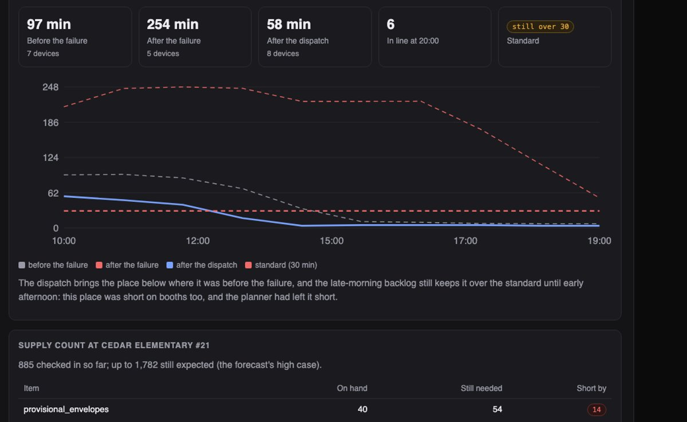
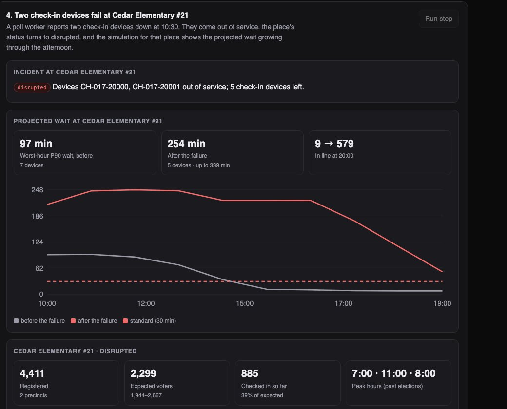
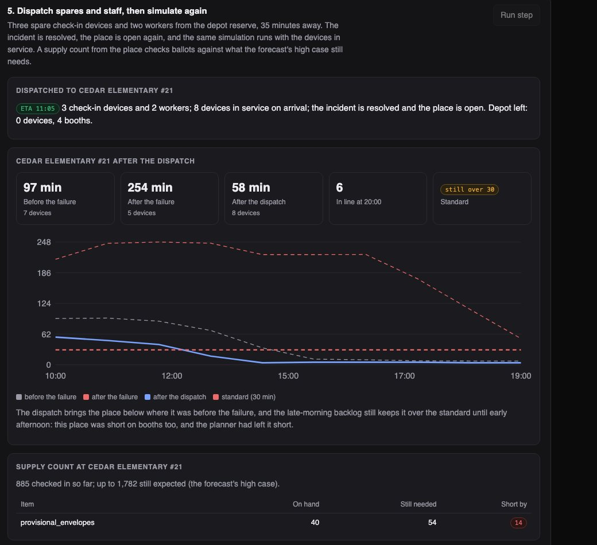

Python · Queue simulation · CP-SAT · 2026-10
How Long Is the Line at the Polling Place?
Election-day operations for an invented county of 25 polling places, strictly operational: arrivals forecast from past turnout timing, every place's line simulated, spares moved with a reserve kept, two check-in devices failing (projected wait 97 → 254 minutes), a dispatch that brings it to 58, and a public view that shows wait buckets and nothing else.

Built from a written blueprint as one vertical slice. Strictly operational, and simulated: the system counts people arriving and waiting and holds no voter identities, preferences or anything about how anyone votes. The county, its places, precincts, equipment, poll workers and arrivals come from a generator in the repository, which is what lets every forecast and plan be checked against the day. No language model is used. Not built: a road network, live reporting from every place, provisional ballots or language assistance in the queue model, shift scheduling, Kafka, Terraform, single sign-on.
01 — The problem
On election day an election office has a fixed number of check-in devices, booths and poll workers, a few spares at the depot, and a hundred thousand people who will arrive when they arrive: before work, at lunch, after work. Lines form where the equipment was allocated for an average day, a device fails somewhere at the worst moment, and the public wants to know how long the wait is without being told anything else. Can software forecast the arrivals, show where the lines will form, move spares to where they help most, react to a failure, and publish only what the public should see, without ever touching how anyone votes?
Blueprint 14 of fifteen in a third build book, built as its demo scenario end to end.
02 — What I built
A Python service on PostgreSQL with a background worker and a web page, started by one docker compose up.
- Forecasts of each place's arrivals by hour from three past elections' turnout and timing, with a band.
- A queue simulation: check-in, booth and tabulator as three stations minute by minute, twenty simulated days per place, using the equipment actually in service.
- A planner (CP-SAT) that moves spares to bring the most places under a 30-minute standard, keeps a reserve, and assigns workers by skill.
- Incidents, supplies and dispatch, each audited, each reflected in the next simulation.
- A public view built from a field whitelist, behind a role that can read nothing else.
03 — How it was built
- 01
A county with peaks
Twenty-five places, urban, suburban and rural, each with its own morning, lunch and evening peaks; sixty precincts and 126,823 registered voters; equipment allocated last time for an average day, generous at some places and short at others; three past elections of turnout rates and hourly timing. The demo starts at 10:30, with the morning peak already reported. Left alone, nine places go over 30 minutes and 2,731 people are still in line at close.
pl["checkin_devices"] = max(2, ceil(peak_hour / (60 / CHECKIN_MIN) * r.uniform(0.85, 1.3))) - 02
A line is three queues
A voter waits for a check-in device, then for a booth, then feeds the tabulator; the wait that matters is from arriving to entering a booth. The simulation runs that minute by minute, twenty times for the rest of the day: hours already reported keep their counts, later hours draw from the forecast, and the equipment is whatever is in service in the database now, so a failure or a dispatch shows up in the next run. The standard is the worst hour's 90th-percentile wait under 30 minutes.
while booth_wait and booth_wait[0][0] <= t and len(booth_busy) < booths: _, t0, h0 = booth_wait.pop(0) joined_wait[h0].append(t - t0) - 03
Spares to where they help, with a reserve
For each place, the fewest devices and booths that meet the standard, found by adding to whichever station is binding until the simulation agrees. CP-SAT then moves the depot's spares (never taking equipment from a place) to bring as many places to standard as possible, then to reduce the voter-weighted shortfall, while three devices, four booths and six workers stay at the depot. By its own simulation the plan takes places meeting the standard from 6 to 16; on the evaluation's real days it moves one place per county under the standard and cuts the people in line at close by 11–35%. The page reports the second number.
mdl.Minimize(10_000 * sum(flag.values()) + sum(weights[i] * (3 * short_d[i] + short_b[i]) for i in needs)) - 04
Two devices down, three sent
At 10:30 a poll worker reports two check-in devices down at Cedar Elementary. They come out of service, the place is marked disrupted, and its projected worst-hour wait goes from 97 to 254 minutes with 579 still in line at close. Three devices and two workers go out from the reserve, 35 minutes away; the rerun says 58 minutes, better than before the failure and still over the standard, because this place was short of booths too and the planner had left it short. Across three other counties the projection made at 10:30 had the failure's size right, with its high case covering the real outcome every time.
c.execute("UPDATE equipment SET status = 'failed' WHERE id = %s", [r["id"]]) - 05
What the public sees, and what nothing sees
The public view is name, hours, accessibility, status and a wait bucket, built from a whitelist; the public role has one permission and one endpoint, and a test checks its response for operational words. Below that, nothing in the schema or the code knows who anyone is or how they vote: there is no voter table, incident types are fixed and operational, and the only thing counted is people in a line.
PUBLIC_FIELDS = ("name", "accessible", "status", "open", "close", "wait_bucket", "last_updated")
04 — Results
The demo. Two check-in devices fail at the county's worst place, and the projected wait for the rest of the day:

After the dispatch from the reserve:

On three other simulated counties:
| System | Baseline | |
|---|---|---|
| Place total voters, error | 7–9% | 9–10% last election's rate |
| Hourly arrivals, error | 59–62 | 70–73 even pace, true total |
| Places really over 30 min, found beforehand | 8–11 of 12–14 | – |
| Places really over 30 min after the plan | one fewer | the plan's own view: 8–9 fewer |
| In line at close after the plan | 11–35% fewer | – |
The forecast's gain is in the timing, not the total. The plan's own simulation is much rosier than the real day, and the page reports the real day. The failure projection gets the size of the problem right, which is what the dispatch needs.
Honest limits. The queue model shares its service rates with the generator; real lines have provisional ballots, language assistance and people who leave. Dispatch times are stated, not routed.
Checks. 11 tests, including: a place with spare capacity has no line and one with failed devices has a longer one, the forecast's total is within 12% and its band holds, the planner never exceeds the depot or takes equipment from a place and never assigns a worker twice, an accessible place always gets an accessibility-trained worker, a dispatch beyond the depot is refused, the public response carries only its fields, and one county cannot see another's operations.
05 — What I'd do next
- Plan on the forecast's high case and measure what it costs in spares against what it catches.
- A second objective, worst place first, shown beside the current one so the office can choose.
- Live queue reports from a phone at every place, feeding the same simulation.